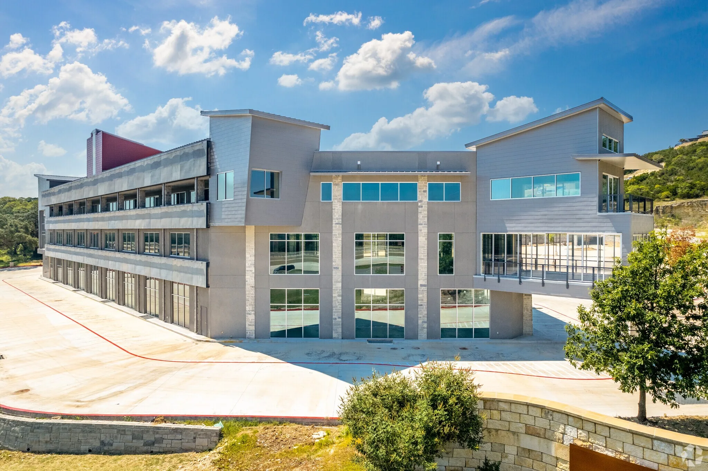

PROUDLY SERVING SAN ANTONIO & THE TEXAS HILL COUNTRY
Glass services with a clear service-area focus across the greater San Antonio metro and surrounding Hill Country communities.
Master Glass Solutions is based in Boerne, TX and provides residential glass, commercial glass, storefront systems, and 24/7 emergency glass repair to communities throughout the region.
WHERE WE WORK
Every community. Every service path.
From our San Antonio office, Master Glass Solutions serves homes and businesses across the greater San Antonio metro and Texas Hill Country with the full range of glass installation, fabrication, and repair services.
SAN ANTONIO METRO
SAN ANTONIO METRO
San Antonio, TX
San Antonio is a core service area for Master Glass Solutions. From downtown sto...SAN ANTONIO METRO
Alamo Heights, TX
Master Glass Solutions serves Alamo Heights with premium residential and commerc...SAN ANTONIO METRO
Leon Valley, TX
Leon Valley properties benefit from Master Glass Solutions' full-service glass c...SAN ANTONIO METRO
Helotes, TX
Master Glass Solutions brings Hill Country glass expertise to Helotes. From cust...SAN ANTONIO METRO
Converse, TX
Converse property owners and businesses trust Master Glass Solutions for reliabl...SAN ANTONIO METRO
Schertz, TX
Master Glass Solutions provides comprehensive glass services to Schertz, TX. Fro...HILL COUNTRY / NORTH
HILL COUNTRY / NORTH
Boerne, TX
Master Glass Solutions serves Boerne, Texas from its San Antonio office. As our home base, Boer...HILL COUNTRY / NORTH
Comfort, TX
Comfort, TX properties are served by Master Glass Solutions with residential and...HILL COUNTRY / NORTH
Timberwood Park, TX
Timberwood Park homeowners rely on Master Glass Solutions for custom residential...HILL COUNTRY / NORTH
Canyon Lake, TX
Master Glass Solutions serves Canyon Lake with residential and commercial glass ...HILL COUNTRY / NORTH
Wimberley, TX
Wimberley properties receive dedicated glass services from Master Glass Solution...HILL COUNTRY / NORTH
Blanco, TX
Master Glass Solutions extends Hill Country glass expertise to Blanco, TX. From ...I-35 CORRIDOR / EAST
I-35 CORRIDOR / EAST
New Braunfels, TX
New Braunfels is a key growth market for Master Glass Solutions. We provide resi...I-35 CORRIDOR / EAST
Seguin, TX
Master Glass Solutions serves Seguin with full-service residential and commercia...I-35 CORRIDOR / EAST
La Vernia, TX
La Vernia homes and businesses benefit from Master Glass Solutions' comprehensiv...I-35 CORRIDOR / EAST
Stockdale, TX
Master Glass Solutions provides reliable glass services to Stockdale, TX. From r...SOUTH / WEST
SOUTH / WEST
Lakehills, TX
Lakehills properties near Medina Lake receive attentive glass services from Mast...SOUTH / WEST
Castroville, TX
Master Glass Solutions brings quality glass work to Castroville, TX. From histor...SOUTH / WEST
Lytle, TX
Lytle, TX is served by Master Glass Solutions for residential and commercial gla...SOUTH / WEST
Natalia, TX
Master Glass Solutions extends glass services to Natalia, TX. From residential w...SOUTH / WEST
Somerset, TX
Somerset homes and businesses trust Master Glass Solutions for dependable glass ...San Antonio, TX
San Antonio is a core service area for Master Glass Solutions. From downtown storefronts to residential neighborhoods across the metro, we provide commercial and residential glass installation, fabrication, custom glass, and 24/7 emergency glass repair.
Glass services in San AntonioAlamo Heights, TX
Master Glass Solutions serves Alamo Heights with premium residential and commercial glass services. Just minutes from our San Antonio office, we handle everything from luxury shower enclosures and custom mirrors to storefront systems and window glass replacement.
Glass services in Alamo HeightsLeon Valley, TX
Leon Valley properties benefit from Master Glass Solutions' full-service glass capabilities. We provide residential glass installation, commercial storefront systems, custom glass features, and responsive emergency glass repair throughout the Leon Valley community.
Glass services in Leon ValleyHelotes, TX
Master Glass Solutions brings Hill Country glass expertise to Helotes. From custom residential glass and shower enclosures to commercial storefront installation and 24/7 emergency repair, we serve Helotes homes and businesses with precision.
Glass services in HelotesConverse, TX
Converse property owners and businesses trust Master Glass Solutions for reliable glass services. We handle residential window replacement, commercial glass systems, custom installations, and emergency glass repair across the Converse area.
Glass services in ConverseSchertz, TX
Master Glass Solutions provides comprehensive glass services to Schertz, TX. From new construction glass installation to commercial storefront systems and emergency repair, our team delivers quality workmanship for Schertz homes and businesses.
Glass services in SchertzBoerne, TX
Master Glass Solutions serves Boerne, Texas from its San Antonio office. As our home base, Boerne receives our full attention for residential glass, commercial glass, custom glass, storefront systems, and 24/7 emergency glass support.
Glass services in BoerneComfort, TX
Comfort, TX properties are served by Master Glass Solutions with residential and commercial glass installation, custom shower enclosures, mirror services, and emergency glass repair. Our San Antonio office provides quick access to the Comfort community.
Glass services in ComfortTimberwood Park, TX
Timberwood Park homeowners rely on Master Glass Solutions for custom residential glass, frameless shower enclosures, window glass replacement, and commercial glass services. Our proximity means fast response for both planned projects and emergency repairs.
Glass services in Timberwood ParkCanyon Lake, TX
Master Glass Solutions serves Canyon Lake with residential and commercial glass services tailored to lakefront and Hill Country properties. From custom shower glass to storefront systems and emergency repair, we keep Canyon Lake properties secure and beautiful.
Glass services in Canyon LakeWimberley, TX
Wimberley properties receive dedicated glass services from Master Glass Solutions. We handle residential glass installation, custom mirrors, commercial glass systems, and emergency repair for homes and businesses throughout the Wimberley area.
Glass services in WimberleyBlanco, TX
Master Glass Solutions extends Hill Country glass expertise to Blanco, TX. From residential window glass and shower enclosures to commercial storefront installation and emergency repair, Blanco properties are within our service reach.
Glass services in BlancoNew Braunfels, TX
New Braunfels is a key growth market for Master Glass Solutions. We provide residential glass, commercial storefront systems, custom glass features, and 24/7 emergency glass repair for the expanding New Braunfels community.
Glass services in New BraunfelsSeguin, TX
Master Glass Solutions serves Seguin with full-service residential and commercial glass capabilities. From new construction glass installation to emergency storefront repair, Seguin properties receive the same quality workmanship as our Boerne and San Antonio projects.
Glass services in SeguinLa Vernia, TX
La Vernia homes and businesses benefit from Master Glass Solutions' comprehensive glass services. We handle custom residential glass, commercial installations, window replacement, and emergency glass repair for the La Vernia community.
Glass services in La VerniaStockdale, TX
Master Glass Solutions provides reliable glass services to Stockdale, TX. From residential window glass and shower enclosures to commercial storefront systems and 24/7 emergency repair, Stockdale properties are within our service area.
Glass services in StockdaleLakehills, TX
Lakehills properties near Medina Lake receive attentive glass services from Master Glass Solutions. We handle residential glass installation, custom shower enclosures, commercial glass, and emergency repair for the Lakehills community.
Glass services in LakehillsCastroville, TX
Master Glass Solutions brings quality glass work to Castroville, TX. From historic district residential glass to commercial storefront systems and emergency repair, Castroville homes and businesses receive our full-service glass capabilities.
Glass services in CastrovilleLytle, TX
Lytle, TX is served by Master Glass Solutions for residential and commercial glass needs. We provide window glass replacement, shower enclosures, custom glass installations, storefront systems, and 24/7 emergency glass repair.
Glass services in LytleNatalia, TX
Master Glass Solutions extends glass services to Natalia, TX. From residential window and shower glass to commercial storefront installation and emergency repair, Natalia properties receive quality workmanship from our nearby San Antonio office.
Glass services in NataliaSomerset, TX
Somerset homes and businesses trust Master Glass Solutions for dependable glass services. We handle residential glass, commercial installations, custom glass features, window replacement, and emergency glass repair across the Somerset area.
Glass services in SomersetFULL COVERAGE
Serving 21+ communities across the region.
Master Glass Solutions provides residential glass, commercial glass, storefront systems, custom glass, shower enclosures, mirrors, window glass replacement, and 24/7 emergency repair throughout the greater San Antonio metro and Texas Hill Country.
YOUR NEXT STEP
Start with the property.
Share the city, address, and glass need. Whether it is a home, business, or urgent situation, the right conversation begins with the right details.
Request a quote Call 210-370-3700Does Master Glass Solutions serve my city?+
Master Glass Solutions serves communities across the greater San Antonio metro and Texas Hill Country. Call 210-370-3700 or submit your property address to confirm service availability.
What glass services are available in my area?+
All service paths — residential glass, commercial glass, storefront systems, custom glass, shower enclosures, mirrors, window glass replacement, and 24/7 emergency repair — are available across the service area.
How do I request a glass quote for my city?+
Call 210-370-3700 or use the quote request form. Include the property address, the glass service you need, your timing, photos of the opening, and approximate dimensions if you have them. Those details let the team identify the right glass, hardware, and crew time before scheduling a visit, which keeps the estimate accurate. For urgent broken glass affecting safety or security, call directly — emergency support runs 24/7.
Is emergency glass support available outside Boerne?+
Master Glass Solutions provides 24/7 emergency glass support across the service area. Call 210-370-3700 to explain the damaged opening, location, and immediate safety or security needs.
RECENT WORK
Recent work in our service area.
MASTER GLASS SOLUTIONS
Bring the property location into the conversation.
A full address or city helps the team understand the project context and guide the next step.